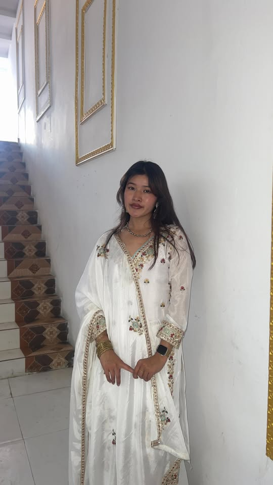

Our mission
To provide shelter, healthcare, and education for orphaned and vulnerable children in Nepal, while connecting them with donors and volunteers who share our values of dignity and hope.
A safe home in Pokhara — education, care, and community for every child.
To provide shelter, healthcare, and education for orphaned and vulnerable children in Nepal, while connecting them with donors and volunteers who share our values of dignity and hope.
A society where every child grows up loved, educated, and empowered—free from neglect and ready to contribute to their community.
Hope Haven Children’s Home was founded in 2010 by educators and social workers in Pokhara. What began as a single house for eight children has grown into a registered home caring for dozens of young people, supported by local donors and international partners.
Our management system helps staff keep accurate records while giving the public a transparent view of children currently in active care.
Each child has a unique story. Browse active profiles on our public listing.
The people who guide Hope Haven every day.

Strategic planning, child welfare policies, and government liaison.
Daily care coordination, education programs, and health monitoring.
Fundraising, donor relations, and volunteer onboarding.
Budget planning, procurement, and daily operations of the home.
Partnerships, events, and connecting families with Hope Haven.